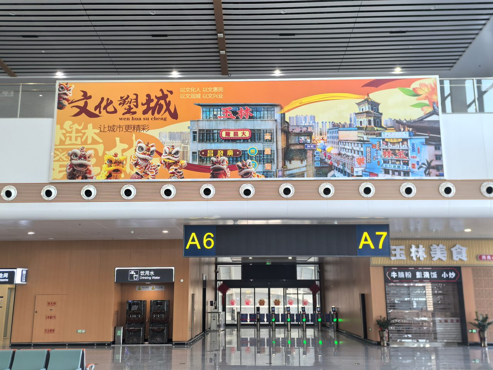

有个做建材的朋友，2025年底在玉林北站投了一块出站通道灯箱。两个月下来，直接打来的咨询电话一只手数得过来。他觉得亏了。
后来他无意中翻朋友圈，发现玉林一个本地包工头拍了他在高铁站的照片——就是那块灯箱——发在朋友圈里，配文"这个牌子终于进玉林了"。下面七八条评论在问价格、问门店在哪。

这块灯箱花了3万。那条朋友圈免费。下面那七八条评论里的潜在客户，也是免费的。
这就是高铁广告的"二次传播"——你的广告被旅客拍下来、发出去、在社交网络里再跑一圈。这一圈的价值，往往比灯箱本身还大。
为什么高铁站的广告特别容易被拍？
三个原因，都不复杂。

候车的人无聊。30分钟以上的候车时间，手机是唯一伴侣。眼睛在刷，镜头也在找——一块好看的灯箱、一个有梗的画面，就是素材。玉林北站候车厅平均停留时间超过30分钟，商务人群占80%以上——这群人对信息的敏感度不低，拍照分享的意愿也不低。
高铁站自带"场景标签"。你在办公室拍张照片，什么都不是。你在玉林北站拍张照片，自带"出差""回家""在路上"的故事感。品牌广告出现在这个场景里，蹭上了这层故事的边。旅客发朋友圈不是为了分享你的广告——是为了分享"在路上"的状态。你的广告只是恰好在这个画面里。
第三个原因最简单：现在年轻人看到什么都想发。UGC——用户生成内容——已经是社交平台上最大的内容来源。品牌花100万做条广告片，可能不如100个真实旅客自发拍的照片来得有说服力。高铁站半封闭环境里旅客停留时间长、视线集中，手机拍照的冲动比大街上高得多。
二次传播的账，算一下就知道有多大
2026年Q1，户外广告市场杀进了14,012个品牌，刊例总规模639.69亿元。高铁广告复合增长率15%以上，动态数字媒体占比已到35%-45%。
但绝大多数品牌花钱买的是"第一眼"——旅客在候车厅看到的那一眼。没几个人想过怎么让这一眼变成旅客手机里的第二眼、朋友圈里的第三眼。
算一笔简单的账：玉林北站一块候车厅灯箱，月费8万，每天几千人经过——这是第一圈。如果其中1%的人拍照分享了，每条分享平均200个微信好友看到——这个第二圈的曝光量，可能和第一圈一样大。
而且第二圈有个第一圈没有的优势：信任。你花钱打广告，消费者知道你花钱了。但朋友发朋友圈说"这个牌子进玉林了"，这是"第三方证明"。在一个信任紧缺的年代，后者远比前者值钱。高铁广告的二次传播，本质上是把"花钱买的曝光"变成了"靠信任传播的曝光"。
 ▲ 玉林北站候车厅刷屏机，14块28面分散各处——旅客候车时刷手机拍照是天然动作，每一块刷屏机都是潜在的"社交传播节点"
▲ 玉林北站候车厅刷屏机，14块28面分散各处——旅客候车时刷手机拍照是天然动作，每一块刷屏机都是潜在的"社交传播节点"四个实操技巧——让你的广告在朋友圈再跑一圈
不是所有高铁广告都值得被拍。有些灯箱挂了一年，没人举起过手机。问题出在广告本身。
1. 把"打卡理由"塞进画面
别含蓄。直接告诉旅客"这里值得拍"。
怎么做？灯箱或LED屏上留出一个"拍照友好区"——可以是一句好引用的文案，可以是一个视觉符号，可以是互动提示。不需要写"请拍照发朋友圈"——太直白反而没人想拍。但画面里如果有让人"想截屏""想转发"的东西，拍照行为就自然发生了。
降低拍照的心理成本。旅客看到广告掏出手机——这个动作本身有门槛：拍了会不会显得奇怪？如果画面本身就传递出"被拍很正常"的信号，门槛就降了。玉林北站152㎡LED大屏——这个尺寸天然让人想拍。品牌在大屏上放一段有视觉效果的内容，旅客站在大屏前拍张照，那块巨幕就一起进了朋友圈。
2. 画面要有"朋友圈感"
什么叫"朋友圈感"？——拍下来直接就能发，不用修图，不用想配文。
一张信息密集、字小得看不清的灯箱，拍出来没人看。一张干净、有态度、画面冲击力强的，拍下来就是一条朋友圈。2026高铁广告白皮书提到，动态内容的回忆率比静态画面高出35%。LED大屏和刷屏机上的动态内容比灯箱更容易被拍——画面在动，拍下来的视频比照片更有"朋友圈感"。
乐事薯片在宁波、芜湖高铁站做过展位——不是传统广告牌，而是实体"乐事零食站"，旅客走进去拍照。本质上是把品牌变成一个"打卡装置"。灯箱和LED屏不能变成展位，但思维可以相同：它不只是一块广告牌，它应该是一个值得被记录的场景。
3. 给拍照的人一个理由来互动
在刷屏机上挂个二维码，写"关注公众号"——转化率不会高。没人赶火车时想扫码关注公众号。
换个写法："测测你的旅行人格，结果直接发朋友圈"——点一下、截个屏、分享出去，全在30秒内。用户得了个好玩的结果，品牌跟着这张截图传播了。这就是"低摩擦互动"——用户不需要填表、不需要关注、不需要下载。分享本身就是完成的动作。
玉林北站14块刷屏机每天轮播150次。100个看到的人里有一个掏出手机互动——放到全天客流里，就是几十个免费的社交传播节点。南玉高铁三站日均触达8000+旅客，哪怕只有千分之一的人做了二次传播，每条传播覆盖200人——那就是1600个免费的精准曝光。
 ▲ 玉林北站候车厅灯箱——一块设计得当的灯箱不只是"信息发布器"，它是旅客手机里的"朋友圈素材"
▲ 玉林北站候车厅灯箱——一块设计得当的灯箱不只是"信息发布器"，它是旅客手机里的"朋友圈素材"4. 内容要让人有认同感和分享欲
这是最容易被跳过的一点。广告内容本身要有"可分享性"——看到的人觉得"说到我心坎里了""画面太酷了""这品牌懂我"，才会主动传播。
2026年户外广告白皮书里有个数据：主打情绪价值的产品在户外广告上的投放大幅升温——香薰+429%、投影仪+162%。这些产品广告被传播，不是因为参数多好，是画面传递出了"独处的惬意""在家的松弛感"。这种情绪共鸣，就是分享的动机。
南玉高铁旅客中商务客群占比超80%。这群人不缺购买力，但他们会被"这个品牌说了我想说的话"打动。一块出站通道灯箱上的广告语如果精准戳中出差人的心情，那张照片就会出现在他的朋友圈——他的微信好友里，可能还有十几个同样在出差的人。
南玉高铁三站的社交传播打法
三个站，三种人群，三种不同的"被拍逻辑"。
| 站点 | 核心人群 | 拍照动机 | 社交传播打法 |
|---|---|---|---|
| 玉林北站 | 商务客群为主，出差、政务、商务考察 | "在路上的状态记录"，"这个城市的变化" | LED大屏适合短视频传播——旅客站大屏前拍段视频发抖音。刷屏机适合做"寻宝式"互动：找到第X块屏截屏有奖。 |
| 横州站 | 茉莉花产业人群，经销商、采购商 | "家乡自豪感"，"我为产地代言" | 品牌广告踩中"茉莉花之乡"的地域认同——本地旅客更愿转发。出站通道灯箱是"离站最后一眼"，画面如果让人"想回头看一眼"，拍照率自然高。 |
| 兴业南站 | B端客商为主，碳酸钙、健康食品产业上下游 | "行业动态信号"，"值得分享给同行" | B端客商传播的目的不是"晒生活"，是"晒信息"。品牌广告如果让B端觉得"行业里又多了一个信号"，他们更愿意分享到行业群。候车厅灯箱位置适合做"行业背书感"画面。 |
一个简单结论：不同人群看同一块广告牌，脑子里想的东西完全不同。商务旅客想的是"这个品牌值得关注"，产业采购商想的是"这个信息值得转给同行"，本地人想的是"这是我们家乡的品牌"。画面设计和传播钩子要对得上这群人的真实心理，而不是统一写一句广告语了事。
别花3万块只买到"一眼"
高铁广告的账，不该只算"多少人看到了"。该算"多少人看到了之后，又让多少人看到了"。
一块灯箱月费2.5万到8万。每天几千人经过，这是第一圈。1%拍照分享，每条分享200人看到——第二圈和第一圈一样大。如果广告内容足够有传播力，分享率提到5%——第二圈是第一圈的5倍。
2026年线上线下流量成本都在涨。抖音文旅广告点击成本从1.2元涨到4.7元。而高铁广告的二次传播——用户主动拍、主动发、朋友主动看——边际成本为零。品牌花钱买的不是一块灯箱，是一个"内容发射器"。旅客不是路过就走的看客，是免费的传播节点。候车那30分钟，就是品牌社交裂变的起点。
下次你在玉林北站看到一块灯箱——别只当它是广告牌。把它当一个入口。灯箱挂了，传播才刚开始。
朋友圈里跑的那一圈，免费。
—— 广西联屏传媒，南珠高铁南玉段广告独家运营商 | 李洪鑫 18878774848（微信同号）